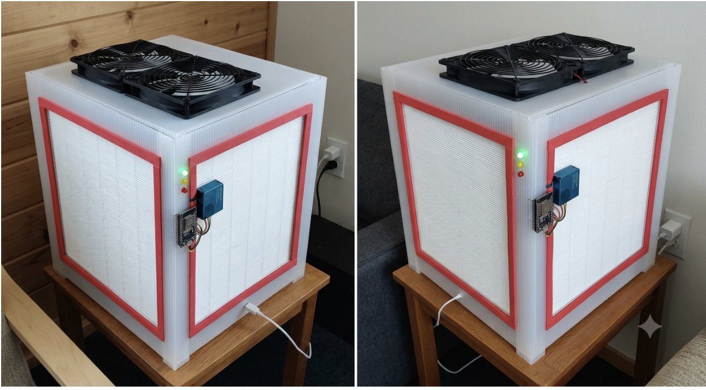

The Design Corsi–Rosenthal Cube Purifier
A Corsi–Rosenthal cube: MERV-13 furnace filters made into a cube around a fan array, drawing room air through the filters on every side. It's a well-documented, open-source design with no proprietary parts, and simple enough to assemble at a community workshop, so replacement parts don't depend on a long freight chain. Each unit also carries a particulate sensor and microcontroller so it can track and forecast indoor PM2.5 in real time, entirely on the device, so it keeps working in homes with limited or no internet.

Our working prototype: dual-fan cube with MERV-13 filter panels and a sensor module wired in.
Materials What Each Unit Uses
- 4 MERV-13 furnace filter / True HEPA panels, 20"×20"
- 2 PC fans for airflow
- PMS5003 particulate sensor
- ESP32 or Raspberry Pi Pico W running the forecasting model
- Red, yellow, and green LEDs for status indication
- USB power cables and wall adapters
Why Alaska & California Indoor Air Quality
Many remote Alaska Native communities face persistent indoor air quality challenges due to a combination of wildfire smoke, wood-burning stoves, diesel generators, and other combustion-related sources. These pollutants produce fine particulate matter (PM2.5), which can penetrate deep into the lungs and bloodstream. Between 2003 and 2020, Alaskans experienced nearly 78 million person-days of unhealthy wildfire smoke exposure, including more than 14 million person-days of dense smoke exposure. During severe wildfire seasons, up to 98% of Alaska census tracts experienced at least one day of moderate smoke, while some Interior Alaska communities endured smoke events lasting more than 40 consecutive days.
California's tribal communities face a similar burden. As wildfires grow more frequent and intense, smoke seasons increasingly stretch across weeks or months. A 2024 study in the Proceedings of the National Academy of Sciences found that from 2006 to 2020, California's Native American communities were exposed to roughly 1.7 times more wildfire smoke than their share of the state's population would predict. Many of these communities are rural and far from major retailers, which leaves few options for clean indoor air when smoke settles in.
Exposure to PM2.5 is linked to increased risks of asthma, chronic obstructive pulmonary disease (COPD), heart disease, stroke, respiratory infections, and premature death. Despite these growing challenges, commercial HEPA air purifiers and replacement filters are often prohibitively expensive and difficult to obtain in remote villages and rural tribal lands, where high costs and long shipping times put them out of reach. The Sila Initiative is working to close this gap with an affordable, high-efficiency air purification system that is practical, accessible, and sustainable for the communities that need it most.